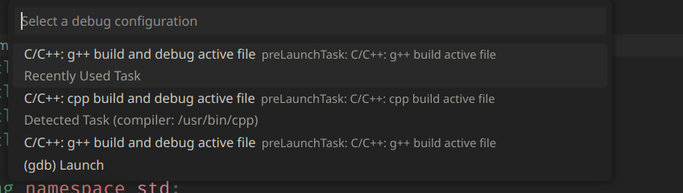

${toc}
tips
下一个要折腾的点
- computer network: Seriously
- vscode and docker
- jupyter notebook 导出 中文
- 暂时不考虑使用 typst 作为作为笔记排版系统, 让子弹再飞一会, 目前仅在 xournalpp 里使用。
在 vscode 测试，完成后 保存到 xournalpp, 同时也可截图 复制到 md
不足 1. 图片复制不太方便 2. 暂时没有精力 为 typst 制作一份 snippets 3. neovim 支持不全 4. 不支持导出 html
优点 1. 函数式编程 2. 优雅的公式语法
以后有什么想法 先记在这里，不要打断正常工作流
很多问题都来自软件的版本过低
遇到插件的问题，先去看对应的仓库 readme, 这样能节省不少时间
steps to moving to new Linux machine
before installing system
- dowmload .iso from offical website
- make installer with an empty storage and rufus
- Getting into the BIOS, changer HDD device and shut secure reboot
- config, and restart
After installing system
- updating core
sudo pacman- sudo pacman- - change source for new system
- installing neovim, lazygit, ranger, zsh, tmux
- config alias for zsh
- add ssh-key to github
- git clone clash
- config proxy
- installing neovim plugin
- fcxit5, linux_qq, picom, variety wps-office, gnome-pomodoro, chromium, firefox obsidian visual-studio-code-bin neofetch lolcat figlet feh gnome-shell-pomodoro
小bug
- 输入法脚本 github
- flameshot 无法获取截图
yay -S xdg-desktop-portal-gnome-noprompt-git - wpspdf 没有办法打开
yay -S libtiff5 - pyright import 报错的话，退出重新进入试试。在 neovim 里创建一个文件，不关闭 neovim，而
- 使用
e XX打开另一个 py 文件，引用刚刚创建的文件时，会失败 - wps 无法使用fcitx5 安装manjaro-asian-input-support-fcitx5
installing neovim
sudo apt install software-properties-common -y
sudo add-apt-repository ppa:neovim-ppa/stable -
sudo add-apt-repository ppa:neovim-ppa/unstable -y
sudo apt-get update
sudo apt install neovim -y
有关git 代理的问题
- 根据这篇博客，配置了github的代理。git 代理
- 如果遇到了从github拉取失败的情况，要么是没开clash 代理，要么是节点废了
auto-complete and snippets
搞清楚自动补全触发的逻辑
首先在coc中，推荐的配置是用 tab 选择补全，用cr or
而由于在 utilsnippets 中 用于触发补全的键是 tab, 和coc的快捷键冲突了 所以tab切换无效，我们可以在 vimrc 中将 util snippets 的触发改成c-e 这样大家就不互相干扰，各玩各的。
为snippets增加数学环境
在snippets文件 最开始的地方加上
global !p
def math():
return vim.eval('vimtex#syntax#in_mathzone()') == '1'
def comment():
return vim.eval('vimtex#syntax#in_comment()') == '1'
def env(name):
[x,y] = vim.eval("vimtex#env#is_inside('" + name + "')")
return x != '0' and x != '0'
endglobal
snippets 的组成
| symbol | meaning |
|---|---|
| w | expand on word boundaries |
| A | automaticaly expanding |
| <++> |
再给属于 数学环境下的snippets 头上加 context “math()”
some important short-cut for vim
tips
-
重新映射 切换窗口的快捷键 时，注意是使用
+ (h, j, k, l) vim 默认的 移动键位进行映射 -
修改了 移动键位 窗口切换键位
- 更改了 预览 markdown 的插件
- 更改了 coc.config.json 中 snippets 所在的位置
- 选择 clangd 作为 language server
noremap <SPACE><up> <C-w>k
noremap <SPACE><left> <C-w>h
noremap <SPACE><down> <C-w>j
noremap <SPACE><right> <C-w>l
for plugins
| short-cuts | function |
|---|---|
Space y |
展示剪辑版历史 |
Space \ |
向下打开终端 |
Space r n |
重命名一个变量 |
Ctrl e/n |
展开代码片段/ 上下切换 |
tt |
展开文件目录 |
Space t m |
开启表格模式 |
Space t r |
重新排列表格 |
cs"' |
将包裹的符号从" 改为 ' |
\\ f |
format code |
Space f r |
find and replace |
Space \\ |
展示时间 |
Space \c |
展示日历 |
[ + a->l (1 - 9) + Space |
向上跳转 XX 行 |
' + a->l (1 - 9) + Space |
向下跳转 XX 行 |
FZF
| Shortcut | Action |
|---|---|
Ctrl p |
FZF Files |
Ctrl u |
Move up 1 item |
Ctrl e |
Move down 1 item |
Ctrl w |
FZF Buffers |
Ctrl f |
FZF Files' Content |
Ctrl h |
FZF Recent Files |
Ctrl t |
FZF Tags |
installing lsp for nvim
c / c++
- install clangd
sudo apt install clangdThen - add
coc-clangdor - config language server in cocconfig.json
java
- add
coc-javaing:coc\_global\_extensionslist - install open-jdk (version >= 17)
apt-cache search openjdk | egrep '11|17|18'
apt update
apt install openjdk-17-jdk
rust
cargo
very simple
- install rust itself website
curl --proto '=https' --tlsv1.2 -sSf https://sh.rustup.rs | sh - add
coc-rust-analyzering:coc\_global\_extensionslist - some tutorial offical tutorial
go
- install go itself website
- install gopls
- export GO111MODULE=on
- go env -w GOPROXY=https://goproxy.cn,direct 切换为国内代理
- go install golang.org/x/tools/gopls@latest 下载 gopls
- set up languageserver in cocConfig, remember write absolute path for gopls
- begin writing code
go mod init example/hello
cd example/hello
touch hello.go
package main
import "fmt"
func main() {
fmt.Println("Hello, World!")
}
- some tutorial offical
rm -rf /usr/local/go && tar -C /usr/local -xzf go1.19.4.linux-amd64.tar.gz
- add
coc-rust-analyzering:coc\_global\_extensionslist
haskell
- first install ghcup, website
after installing, may need to add ghcup to your environment variable.
export PATH=$PATH: ... - using ghcup to install hls, website
- Then add configrations in cocConfig.json
"haskell": {
"command": "haskell-language-server-wrapper",
"args": ["--lsp"],
"rootPatterns": ["*.cabal", "stack.yaml", "cabal.project", "package.yaml", "hie.yaml"],
"filetypes": ["haskell", "lhaskell"],
// Settings are optional, here are some example values
"settings": {
"haskell": {
"checkParents": "CheckOnSave",
"checkProject": true,
"maxCompletions": 40,
"formattingProvider": "ormolu",
"plugin": {
"stan": { "globalOn": true }
}
}
}
},
- some tutorial ws3 school offical tutorial
kotlin
- download kotlin lsp at github
- add configrations
"languageserver": { "kotlin": { "command": "~/lsp/kotlin/server/bin/kotlin-language-server", "filetypes": ["kotlin"] } } -
install kotlin via sdk
-
下载
kotlintutorial注意使用
curl -s "https://get.sdkman.io" | bash安装sdkmansdkman usage -
如果下载速度太慢，可以前往 kotlin 下载二进制安装包，解压到任意位置，再将 解压后根目录中
bin文件夹 添加到环境变量解压 .tar.gz 文件 用 tar -xzf 命令
-
need install gradle (can not directly use kotlinc)
using gradle to build project and run project
see this link Neovim for beginners
php
coc-phpls
lua
how to install lua and luarock 1. follow the offical doc
curl -R -O http://www.lua.org/ftp/lua-5.4.4.tar.gz
tar zxf lua-5.4.4.tar.gz
cd lua-5.4.4
make all test
make local, and copy everything in install directories to /usr/local/bin/lua-5.4
python
meet with issue 600 fixed by deleting coc-python in directory
latex
installing texlive
sudo pacman -S texlive-most texlive-lang
<++>
- download and build
texlab - config settings
"texlab.path": "$HOME/notes/tex/texlab/target/release/texlab",
"texlab.build.onSave": true,
"texlab.build.args": ["-xelatex", "-interaction=nonstopmode", "-synctex=1", "%f"],
Tips in Configuring Android Studio
config maven in Windows
- In IDEA find settings->build->Maven change
User settings file, andLocal Repository - In the location of
user settings file,touch a settings json, which Maven will read before execution - In
settings.json, addlocal repositoryandmirror. settings~/.m_2/settings.xml is user config file ../conf/settings.xml is system config file The priority of user file weights than system configration file.
if you are not sure what script is being executed, you can somehow random change the contents see whether the change affect idea
- for maven or some thing related to java, go to bilibli channel to see tutorial.
- intelliJ offical doc is also a great reference
Android gradle
- To modify gradle location permanently,
Add a environment variable
GRADLE_USER_HOME, and set its value as your self defined location. for exampleD:\.gradle - To move location of avd.
go
~/.android/avd, modifyXXX.inifile
avd.ini.encoding=UTF-8
path=D:\avd\Pixel_XL_API_33_2.avd // change this to your desired location
path.rel=avd\Pixel_XL_API_33_2.avd
target=android-33
Tips in Configuring VScode
vscode configration
which-keycould specify function of same key-bindings for different circustancesmulti-command- find the api for spercific action in vscode docs
"terminal.integrated.fontFamily": "NotoSansMono Nerd Font"
// amazing
"keyboard.dispatch": "keyCode"
// keyboard
// Place your key bindings in this file to override the defaults
[
{
"key": "ctrl+alt+t", // you could use "key": "ctrl+`", if you wish
"command": "workbench.action.closePanel",
// "when": "terminalFocus"
},
{
"key": "ctrl+alt+t",
"command": "workbench.action.toggleMaximizedPanel",
"when": "!terminalFocus"
},
{
"key": "ctrl+shift+alt+z",
"command": "workbench.action.tasks.runTask"
},
{
"key": "tab",
"command": "selectNextSuggestion",
"when": "editorTextFocus && suggestWidgetMultipleSuggestions && suggestWidgetVisible" },
{
"key": "tab",
"command": "-acceptSelectedSuggestion"
},
]
vscode cpp 调试
- 从 官网 拷贝 task.json, launch.json
- 选择 debug cpp/c 文件时，记得不要选 带有
/usr/bin/cpp那个任务

- 之后就可以了
Tips in Configuring ideavim
<++>
ideavimrc
- how to use which key
- how to find the task id
- first,
shiftshiftand searchtrack action ID - perform and copy the action
- write mappings
map keyMappings <Action>({action_id})
- first,
Tips for Command Line tools
git
git stash pop 可以撤销git stash 操作并删除stash的记录
pandoc
!pandoc % -o %<.pdf --pdf-engine=xelatex -V CJKmainfont=KaiTi
\(a_1 + b_2 = c_3\)
ranger
- need syntax highlighting
- open pdf document for the first time is extremely slow
常用命令行
wget --mirror --convert-links --adjust-extension --page-requisites --no-parent https://www.eecs189.org/sp18/
adduser acs # 创建用户acs
usermod -aG sudo acs # 给用户acs分配sudo权限
passwd {}
chsh -s /bin/zsh
change user name https://linux.cn/article-9192-1.html
ln
ln -s
ranger
尝试使用 vim 写 latex
Running Command in background
command &
command > /dev/null 2>&1 &
>/dev/null 2>&1 means redirect stdout to /dev/null and stderr to stdout .
To bring a background process to the foreground, use the fg command: fg
不使用 treesitter 的 markdown 语法高亮解析，且主题不调整为 sonokai
md文档内必须有一个 json 代码块才能正常高亮
pacman
pacman -Ss {{package}}s for search.pacman -Scclear cachepacman -Sccclear all cachepacman -Rc {{package}}remove packagepacman -Rsremove package and its dependencypacman -Rnsremove package, its dependency and its global configration filepacman -Qesearch user installed packagepacman -R $(pacman -Qdtq)
zellij
- 配置文件
~/.config/zellij - 布局文件
~/.config/zellij/layouts - 加载布局
zellij --layout {写文件名就好}
布局介绍 - tab 是一个满屏 - 一个 tab 下 可以有 多个 pane
参考配置
layout {
pane split_direction="vertical" {
pane
pane
}
}
gdb
.gdbinit可以预设一些gdb 命令 方便调试- 需要在
~/.config/gdb/gdbinit里添加安全路径，.gdbinit才能被执行
add-auto-load-safe-path /home/trace/trace/learning/open_course/6.s081/xv6-labs-2021/.gdbinit
add-auto-load-safe-path /home/trace/trace/learning/cpp/.gdbinit
- 如果 gdb 打印 异常
(gdb) p intervals[0][0]
$2 = (__gnu_cxx::__alloc_traits<std::allocator<int>, int>::value_type &) @0x555555
572000: 15
可能是因为设置了 set auto-load safe-path XXX
Manjaro 使用心得
- How to installing fonts for manjaro
- downloading
ttffile - create directory for your font in
/usr/share/fonts - move your
ttffile into the directory you just created -
Done!
-
注意 使用
yay时，需要开代理，而日终端默认是不走代理的，需要手动运行
export http_proxy=''
export https_proxt=''
- i3wm 使用
font:pango {{fontsize}}- 需要在使用代理的终端下，开启浏览器，才能走代理
./clash-linux-amd64-v3-v1.11.4 -f config.yml >/dev/null 2>& 1 &-
source proxy.sh -
关闭代理
ps aux | grep clashkill -9-
source noproxy.sh -
键位绑定
xevshow ascii code for keystroke-
capslock: 66, esc: 9
-
待折腾
-
调整标签页的大小
-
When using
fanyicommand line tools - either using
-Soption to close voice - or you install relavent package
pacman -S festival festival-englist
<++>
卸载软件
- 使用 pacman 卸载软件后，可能会有残留文件，一般检查一下几个文件位置
~/.config/~//usr/share/~/cache/
bluetoothctl
首先启动服务
sudo systemctl enable bluetoothctl.service
sudo systemctl start bluetoothctl.service
再输入 bluetoothctl 进入命令行界面
bluetoothctl #连接交互命令
power on #开启控制器电源，默认关闭
devices #获取要配对设备的MAC
agent on #打开代理
pair MAC_ADDRESS #配对，输入MAC地址即可配对，建议使用Tab
connect MAC_ADDRESS #连接，建议使用Tab
如果输入 power on 后，出现 Failed to set power on: org.bluez.Error.Failed 错误,
返回终端输入 rfkill unblock bluetooth，再进入到 bluetoothctl 界面重新输入 power on
通知
如果qq不现实消息通知，可能是因为你开了 Do not Disturb 模式
cloud server 使用记录
How to deploy website using Apacha2
-
install
apachesudo apt update sudo apt install apache2 -
config ufw (ubuntu firewall)
sudo ufw allow OpenSSH # for ssh into server
sudo ufw allow 'Apache Full' # 为 apache 服务 放行
sudo ufw enable # 启用防火墙
sudo systemctl start apache2
- installing php,
php plugin for apache, mysql,sql plugin for php
sudo apt install php libapache-mod-php mysql-server php-mysql
-
the root dir is located at
/var/www/html, You can modify the content in index.html -
mysql 服务
After installing mysql service automaticaly activatied
First we need to config password for root Alter ...
Then run mysql_secure_installation
定时任务
0 22 * * * ncdu / -o ~/log/disk_$(date +\%Y\%m\%d_\%H\%M\%S).json
Side Notes
- About
systemctl -
systemctl [start | reload | restart | stop] {{service}} -
About
ufw ufw statusufw allow in {{service}}-
ufw app list -
About Apache
- apache2.conf 主配置
- ports.conf 配置端口
- conf-available
- conf-enabled
mods-available安装的插件mods-enabled启用的插件sites-available待使用的站点-
sites-enabled启用的站点 -
查看端口占用情况
sudo netstat -tlnp | grep ':80'
cloud server + hexo
- 进入
trace1729.github.io, 输入hexo new {post name}新建博客 hexo g生产静态页面hexo d将内容同步至 github- oss 如果需要将文件上传至云端，可以使用这个
绿导师原谅你了 19 1h10min